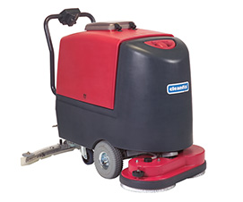
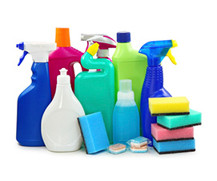

Каталог
В ходе уборки используются моющие средства производства "PRAMOL" (Швейцария), DR. SCNELL (Германия) и других ведущих фирм Европы.

Уборочная техника
Пылесосы, грязеводососы, поломоечные и экстракторные машины, роторы и многое другое. Только качественная продукция зарубежных брендов!
- Уборка в санитарных зонах
- Универсальные концентраты
- Готовые системы для ежедневной уборки
- Интенсивная очистка стойких загрязнений
- Очистка ворсовых покрытий
- Очистка и уход за деревянными поверхностями
- Средства для очистки полов
- Средства для мойки стекла
- Средства для профессиональной кухни и пищевой промышленности
- Удаление граффити и защита
- Стрипперы
- Для очистки и защиты фасадов зданий
- Экологическая уборка

Моющие средства
У нас есть моющие средства для устранения любого типа загрязнения. Дерево, стекло, ворс, фасады зданий. Без повреждений отчистить можно всё, что угодно!
- Уборка в санитарных зонах
- Универсальные концентраты
- Готовые системы для ежедневной уборки
- Интенсивная очистка стойких загрязнений
- Очистка ворсовых покрытий
- Очистка и уход за деревянными поверхностями
- Средства для очистки полов
- Средства для мойки стекла
- Средства для профессиональной кухни и пищевой промышленности
- Удаление граффити и защита
- Стрипперы
- Для очистки и защиты фасадов зданий
- Экологическая уборка